Doação de Sangue
Doar sangue salva vidas. Esse gesto simples e rápido pode fazer toda a diferença para pessoas que precisam de transfusões em situações de emergência, cirurgias ou tratamentos de saúde. Ao doar, você oferece uma nova chance para alguém continuar vivendo, mostrando solidariedade e cuidado com o próximo.
Doar sangue salva vidas. Esse gesto simples e rápido pode fazer toda a diferença para pessoas que precisam de transfusões em situações de emergência, cirurgias ou tratamentos de saúde. Ao doar, você oferece uma nova chance para alguém continuar vivendo, mostrando solidariedade e cuidado com o próximo.
Ser doador é ajudar a salvar vidas, já que uma única doação pode beneficiar mais de uma pessoa, tornando essencial a doação regular para manter os estoques.
Quero doar
Para doar sangue, é preciso atender a requisitos básicos, em um processo simples, rápido e seguro, realizado por profissionais capacitados.
Requisitos para ser um doador de sangue
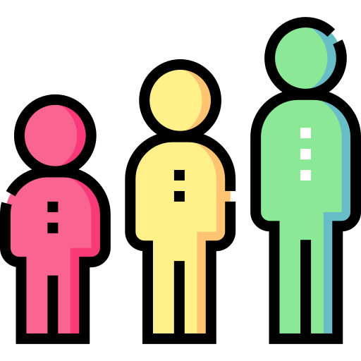
Ter entre 16 e 69 anos
Pesar mais de 50kg
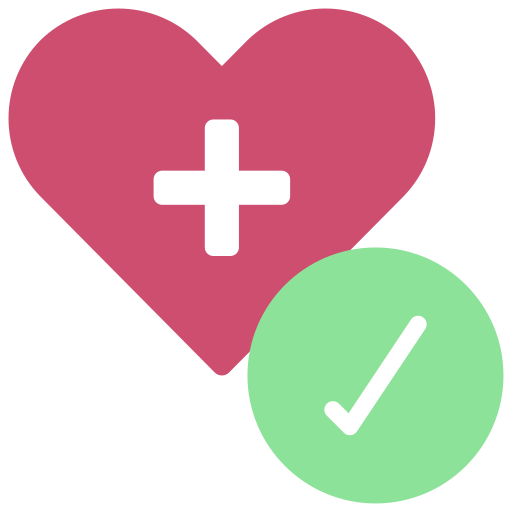
Ter boa condições de saúde
Apresentar documento oficial (com foto)
Estar bem alimentado
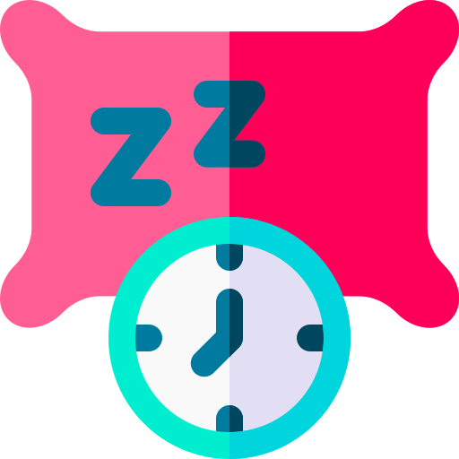
Ter dormido bem a noite anterior (6 horas)
O doador deve respeitar os intervalos entre doações
MULHERES
Intervalo de 90 dias
HOMENS
Intervalo de 60 dias
Quem não pode doar?
Existem fatores que podem impedir a doação sangue. Conhecê-los é essencial para garantir que o processo seja seguro, protegendo a saúde de quem doa e de quem recebe.
As restrições temporárias aplicam-se a qualquer situação que possa afetar temporariamente a saúde do doador ou a qualidade do sangue coletado. O tempo de espera depende da condição específica e é definido pelo serviço de hemoterapia.
Restrições temporárias para ser um doador de sangue
Estar grávida ou amamentando
Ter consumido bebidas alcoólicas (12h).
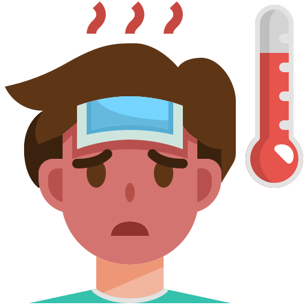
Gripe, resfriado ou febre.
Tatuagem e Piercing
(6 meses)
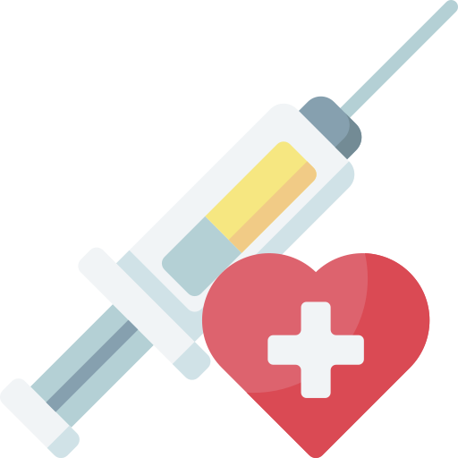
Vacina
Uso de certos medicamentos.
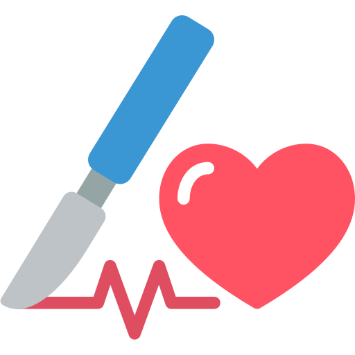
Cirurgias (6 meses).

Endoscopia ou exames envasivos.
As restrições permanentes são aplicadas quando existe risco definitivo de transmissão de doenças pelo sangue. Nesses casos, a pessoa não poderá doar em nenhum momento.
Restrições permanentes para ser um doador de sangue
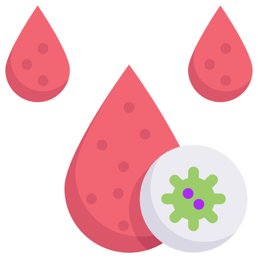
Doenças transmissíveis pelo sangue.
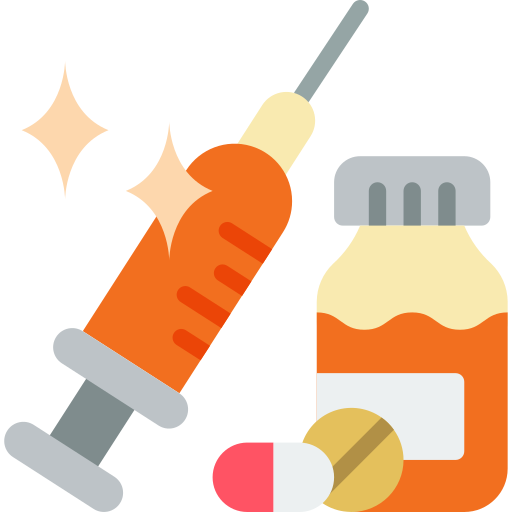
Uso de drogas.
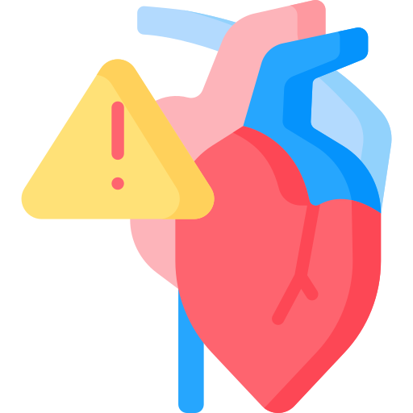
Algumas condições de saúde graves.
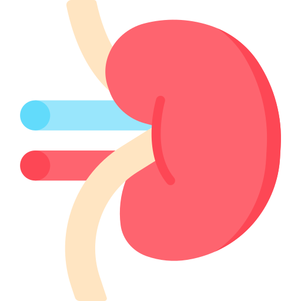
Ter feito transplante de órgãos ou tecidos específicos.
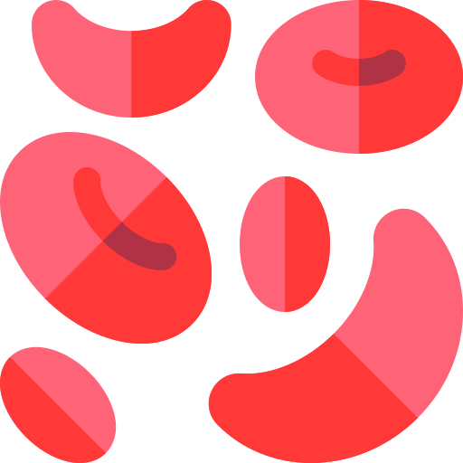
Problemas hematológicos.
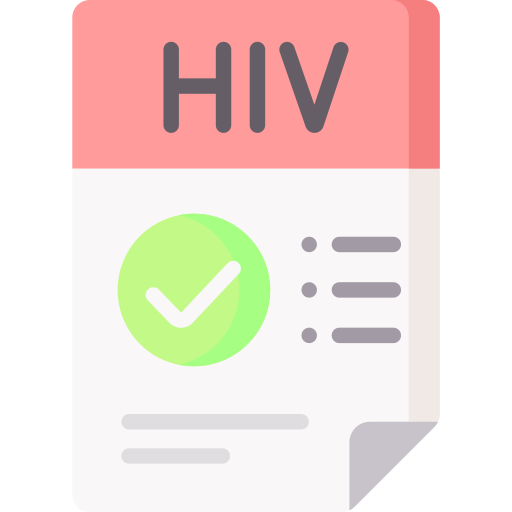
Histórico de exames sorológicos positivos.
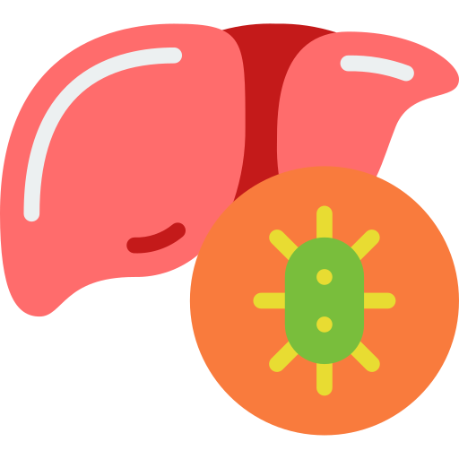
Infecções crônicas específicas.
Doenças neurológicas infecciosas raras.
Tipos sanguíneos e compatibilidade
O sangue humano é classificado pelo sistema ABO e fator Rh. Conhecer seu tipo sanguíneo é essencial para saber quem você pode ajudar com sua doação.
Compatibilidade entre tipos sanguíneos
* O- é doador universal · AB+ é receptor universal
Curiosidades
Uma única doação pode salvar até 4 vidas, pois o sangue é separado em componentes — hemácias, plaquetas e plasma — cada um beneficiando um paciente diferente.
O corpo repõe o volume de líquido em até 24 horas. As células vermelhas levam entre 4 a 8 semanas para se recuperar completamente.
Apenas 1,8% dos brasileiros doam sangue. A OMS recomenda que pelo menos 3% da população seja doadora para suprir as necessidades dos bancos de sangue.
A coleta dura cerca de 10 minutos. Considerando cadastro e triagem, a visita completa ao hemocentro leva em média 40 a 60 minutos.
O sangue tem prazo de validade: hemácias duram até 42 dias e plaquetas apenas 5 dias. Por isso a doação regular é essencial.
Ao doar, o doador recebe exames gratuitos como tipagem sanguínea e testes para hepatite, HIV e outras doenças.